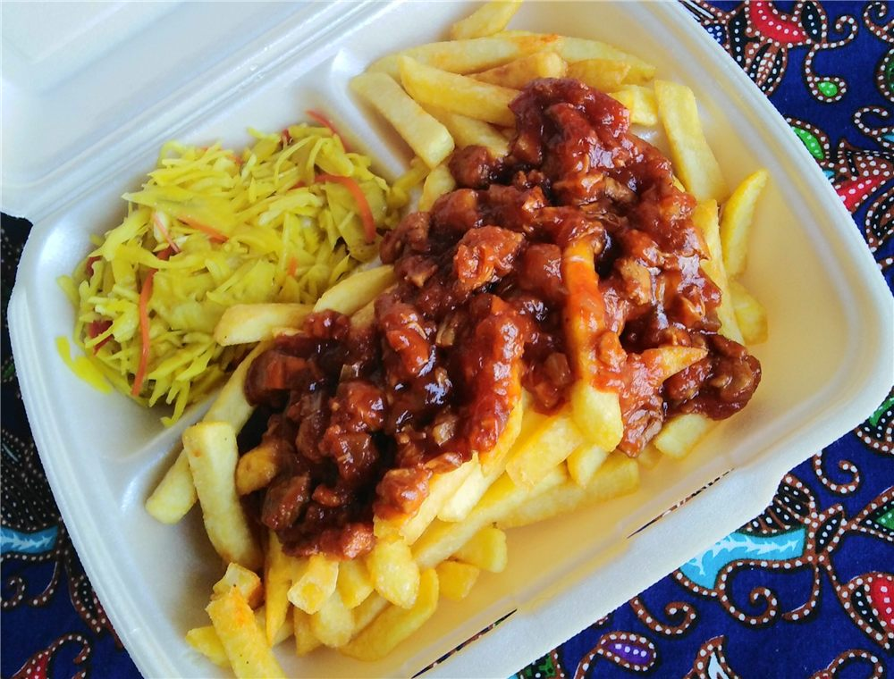
Patat ajam pangang
East meets West: onze patat met een ajam (kip) pangang-topping, met erbij een portie atjar. Een super combinatie.
Glutenvrij, vermeld het bij bestellende cafetaria die u graag iets extra's biedt
Goudgele verse patat, huisgemaakte eierballen, berehappen, loempidellen en stoofvlees. Neem het mee, of eet gezellig bij ons: binnen of buiten op het overdekte terras.
Di t/m za 11.30 - 19.30 · zo 15.00 - 19.30
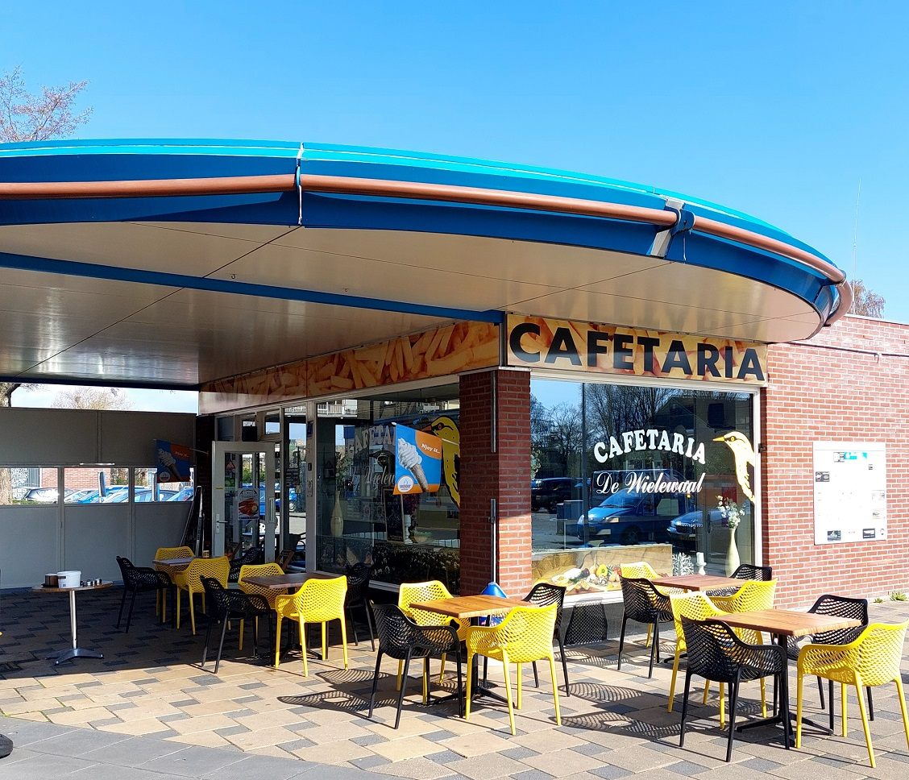
Opendi t/m za 11.30 - 19.30 · zo 15.00 - 19.30 · ma dicht
Bestellen0528-264766 · b.g.g. 06-27267733
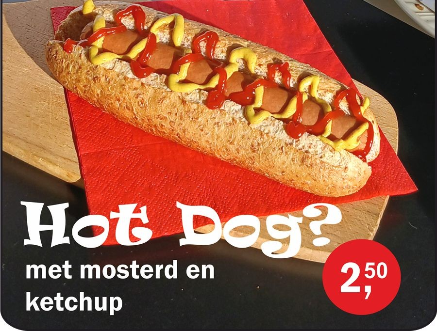
Actie van de maand
Elke maand een andere actie. Een voorbeeld: een hot dog met mosterd en ketchup.
Doorlopende actie: lever je oude frituurvet in.
Neem je gebruikte frituurvet of -olie mee als je toch komt, en ontvang 10% korting op je besteding.
Specialiteiten
Onze patat wordt met liefde bereid en herken je aan zijn goudgele kleur. Bij ons is ieder patatje bijzonder, en dat geldt ook voor wat we erbij maken.

East meets West: onze patat met een ajam (kip) pangang-topping, met erbij een portie atjar. Een super combinatie.
Glutenvrij, vermeld het bij bestellen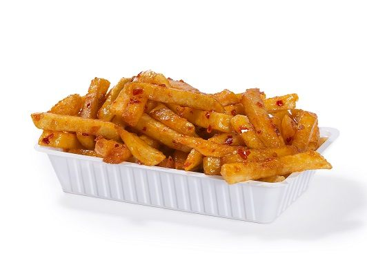
Een portie patat op onze wijze bereid, met o.a. sambal. Proef hem eens en zegt het voort.
Glutenvrij, vermeld het bij bestellen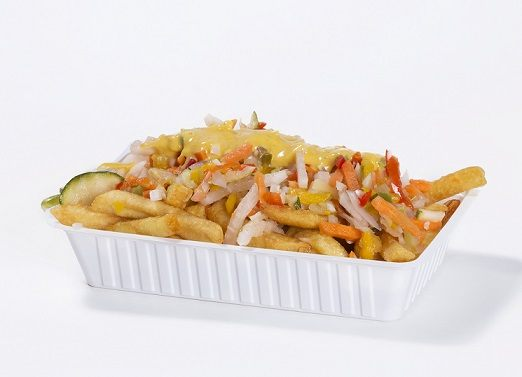
Een portie patat met daarop onze vers gesneden rauwkost, overgoten met Joppiesaus.
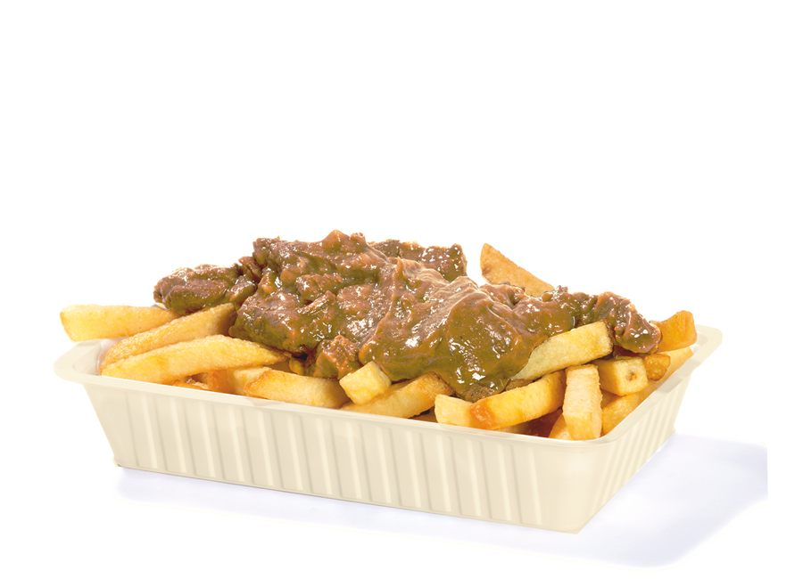
Mals gesudderd kophaas, authentiek bereid met ui en kruiden in zijn eigen vleessaus.
Glutenvrij, vermeld het bij bestellen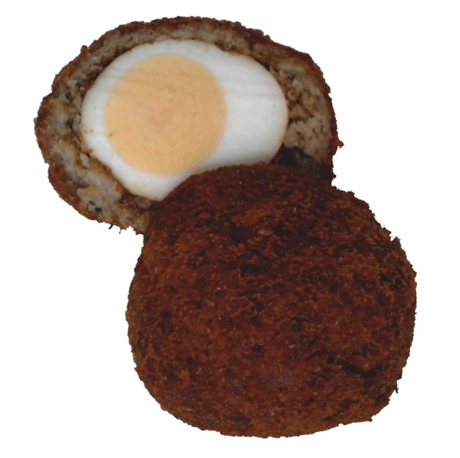
Onze huisgemaakte eierbal kent een formidabele kruidenmix. Met recht een eierbal met smaak.
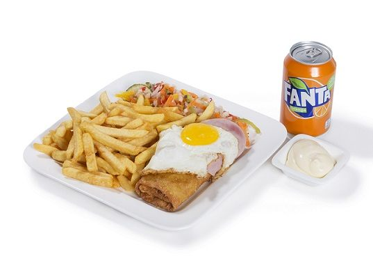
Onze kiploempia met ham, spiegelei en satésaus, met goudgele patat, rauwkost en drinken naar keuze uit ons assortiment.
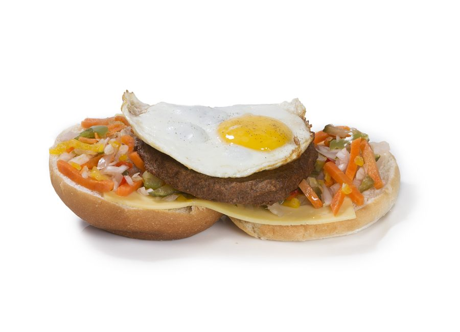
Een bolletje belegd met kaas, rauwkost, een hamburger speciaal en daarop een spiegelei.
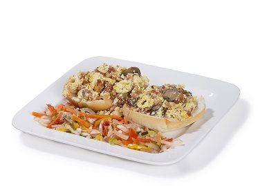
Een bolletje met roerei, waarin gebakken gerookte spekjes, champignons en ui, aangevuld met rauwkost.
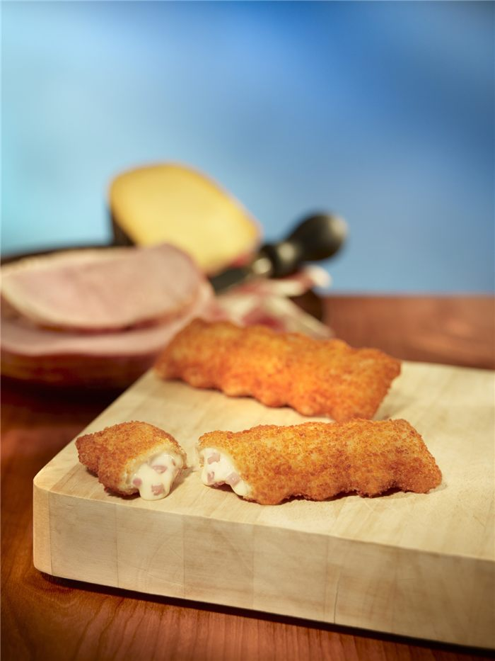
Rijkelijk gevuld met lekkere kaas en echte blokjes ham. Heerlijk! Bekijk het productiefilmpje.
Pittig gekruide en gemarineerde kipkluifjes. Een veelgevraagde specialiteit, en met recht.
Patat-toppings & burgers
Onze ruime variatie aan patat-toppings en speciale broodjes hamburger. De prijzen vind je in de prijslijst.
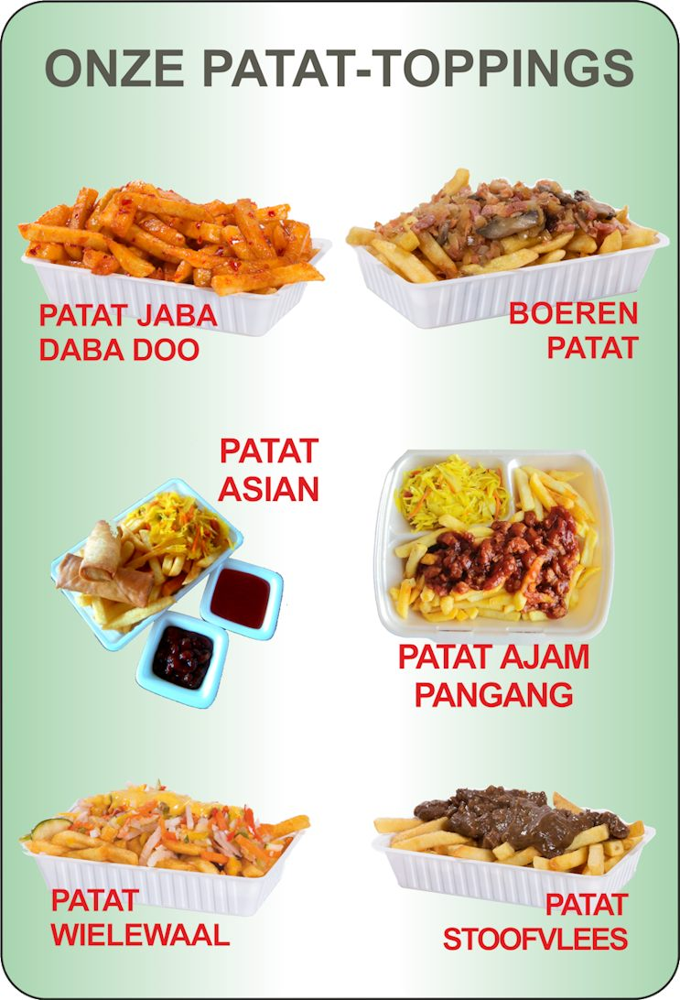
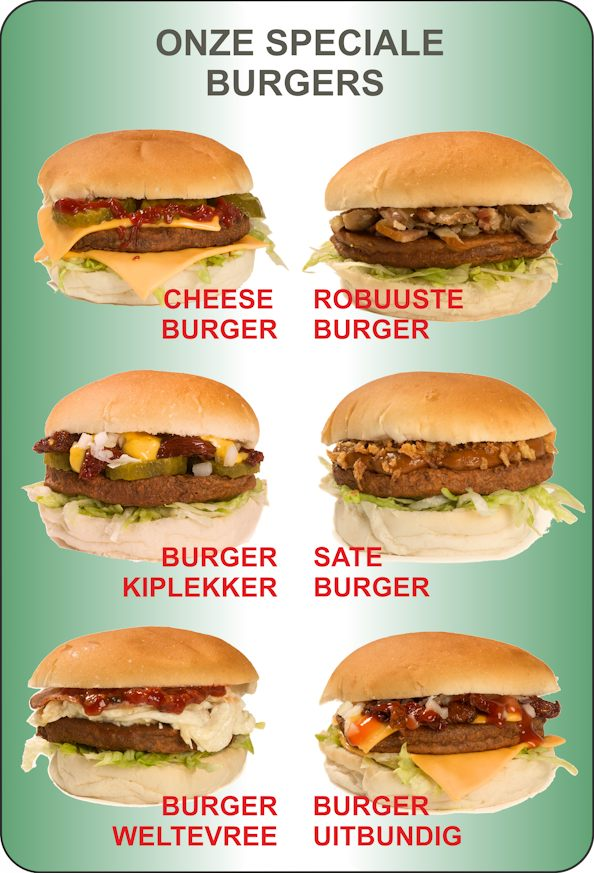
Extra
Speciaal voor de kinderen: een goed gevulde box voor de kleine eters.
Kleur jij graag? Op onze oude site staat een kleurplaat.
Er komt een dame de bibliotheek binnen: "Ik zou graag 1 grote friet, 1 cola en 1 kroket willen bestellen." De man achter de balie: "Mevrouw, u bent hier in een bibliotheek." Waarop de dame fluisterend antwoordt: "1 grote friet, 1 cola en 1 kroket graag."
Een kadobon van een cafetaria? Jazeker! Dan weet je zeker dat je iemand blij maakt, je geeft iets leuks weg, en de bon wordt gegarandeerd gebruikt.
Of een combinatie daarvan. Nieuw: gepersonaliseerde kadobonnen voor elk bedrag, leuk verpakt en met een persoonlijke zin op de bon. Wij versturen hem, of je haalt hem zelf op.
Geef uiterlijk 2 dagen van tevoren de gegevens door via info@cafetariadewielewaal.nl of bel 06-27267733. Bel je tijdens openingstijden en vóór 17.00 uur, dan ligt de bon op de afgesproken dag klaar.
Lever je gebruikte frituurvet of -olie bij ons in en ontvang 10% korting op je besteding.
Laat het vet afkoelen tot onder de 40 graden en giet het met een trechter in een geschikte fles (het liefst de oorspronkelijke). Het vet wordt na zuivering hergebruikt, bijvoorbeeld als biodiesel of als grondstof voor groene stroom.
Gooi het nooit bij het restafval, in het riool, de gootsteen of de tuin.
Contact & route
Je vindt ons in winkelcentrum De Wielewaal in de wijk Wolfsbos, zuidoostelijk in Hoogeveen. Rondom de cafetaria is altijd een gratis parkeerplek.
| Maandag | gesloten |
| Dinsdag | 11.30 - 19.30 |
| Woensdag | 11.30 - 19.30 |
| Donderdag | 11.30 - 19.30 |
| Vrijdag | 11.30 - 19.30 |
| Zaterdag | 11.30 - 19.30 |
| Zondag | 15.00 - 19.30 |
Cafetaria De Wielewaal
De Wielewaal 11, 7905 GX Hoogeveen
Telefoon 0528-264766, bij geen gehoor altijd bereikbaar op 06-27267733
info@cafetariadewielewaal.nl · Facebook
Betalen kan met pin en contactloos.
Rijd bij knooppunt Hoogeveen richting Hoogeveen-Oost. Neem de afslag Hoogeveen-Oost en sla bij de stoplichten linksaf richting Hoogeveen. Bij de 2e stoplichten rechtdoor tot de rotonde, daar linksaf (driekwart rotonde). Rijd rechtdoor over de Buizerdlaan. Na de benzinepomp aan je rechterhand bij de tweede straat rechtsaf, na 50 m linksaf: aan het eind van de straat zie je al de achterzijde van onze cafetaria. Parkeren kan links of rechts.
Neem vanaf de A37 de afslag Hoogeveen-Oost en ga bij de 1e stoplichten linksaf richting Hoogeveen. Bij de 2e stoplichten rechtdoor tot de rotonde, daar linksaf (driekwart rotonde). Rijd rechtdoor over de Buizerdlaan, na de benzinepomp aan je rechterhand bij de tweede straat rechtsaf, na 50 m linksaf: aan het eind van de straat zie je de achterzijde van onze cafetaria. Parkeren kan links of rechts.